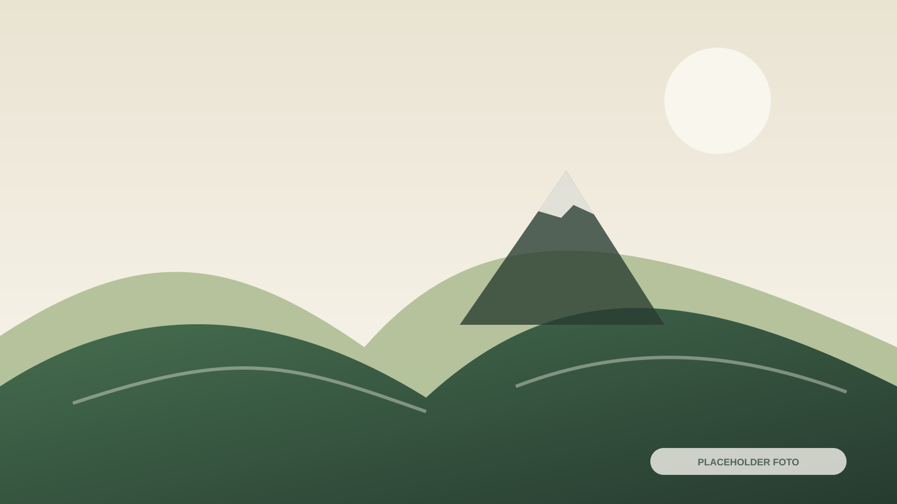

Artikel
Judul Artikel Desa
Ringkasan artikel, tanggal publikasi, dan kategori akan tampil di sini.

Ruang untuk membagikan agenda, cerita masyarakat, informasi program, dan pembaruan resmi dari Desa Wisata Patakbanteng.
Brief belum memuat artikel atau agenda aktual, sehingga contoh di bawah hanya struktur kosong.
Ringkasan artikel, tanggal publikasi, dan kategori akan tampil di sini.

Informasi kegiatan agrowisata dan konservasi yang telah dikonfirmasi.

Pengumuman resmi terkait layanan Basecamp dan pendakian.
| Tanggal | Kegiatan | Lokasi | Status |
|---|---|---|---|
| BELUM DIISI | Nama kegiatan resmi | BELUM DIISI | Menunggu data |
Judul → Ringkasan → Foto → Isi → Informasi praktis → Informasi.
Struktur ini menjaga artikel tetap mudah dipindai pada ponsel.
Duplikasi kartu artikel pada file berita.html ketika konten resmi sudah tersedia.
Hubungi pusat informasi untuk memastikan layanan, jadwal, dan kebutuhan perjalanan Anda.